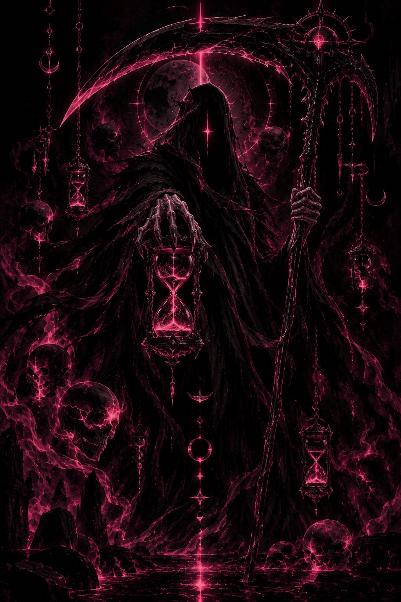

𝕃𝔸 𝔽𝕀ℕ𝕀𝕋𝕌𝔻
𝓡𝓮𝓹𝓻𝓮𝓼𝓮𝓷𝓽𝓪 𝓵𝓸𝓼 𝓵í𝓶𝓲𝓽𝓮𝓼 𝓭𝓮 𝓵𝓪 𝓮𝔁𝓲𝓼𝓽𝓮𝓷𝓬𝓲𝓪 𝓱𝓾𝓶𝓪𝓷𝓪. 𝓔𝓵 𝓽𝓲𝓮𝓶𝓹𝓸 𝓷𝓸 𝓮𝓼 𝓲𝓷𝓯𝓲𝓷𝓲𝓽𝓸 𝔂 𝓻𝓮𝓬𝓸𝓷𝓸𝓬𝓮𝓻𝓵𝓸 𝓷𝓸𝓼 𝓲𝓷𝓿𝓲𝓽𝓪 𝓪 𝓻𝓮𝓯𝓵𝓮𝔁𝓲𝓸𝓷𝓪𝓻 𝓼𝓸𝓫𝓻𝓮 𝓷𝓾𝓮𝓼𝓽𝓻𝓪𝓼 𝓭𝓮𝓬𝓲𝓼𝓲𝓸𝓷𝓮𝓼 𝔂 𝓮𝓵 𝓿𝓪𝓵𝓸𝓻 𝓭𝓮 𝓬𝓪𝓭𝓪 𝓶𝓸𝓶𝓮𝓷𝓽𝓸.
𝔸ℝℂℍ𝕀𝕍𝕆 𝕀𝕀 · 𝔽𝕀𝕃𝕆𝕊𝕆𝔽Í𝔸 · ℝ𝔼𝔾𝕀𝕊𝕋ℝ𝕆 #𝟘𝟜
𝓔𝓛 Ú𝓛𝓣𝓘𝓜𝓞 𝓤𝓜𝓑𝓡𝓐𝓛 𝓓𝓔 𝓛𝓐 𝓔𝓧𝓘𝓢𝓣𝓔𝓝𝓒𝓘𝓐
𝓛𝓪 𝓶𝓾𝓮𝓻𝓽𝓮 𝓻𝓮𝓹𝓻𝓮𝓼𝓮𝓷𝓽𝓪 𝓾𝓷𝓸 𝓭𝓮 𝓵𝓸𝓼 𝓶𝓪𝔂𝓸𝓻𝓮𝓼 𝓶𝓲𝓼𝓽𝓮𝓻𝓲𝓸𝓼 𝓭𝓮 𝓵𝓪 𝓮𝔁𝓲𝓼𝓽𝓮𝓷𝓬𝓲𝓪 𝓱𝓾𝓶𝓪𝓷𝓪. 𝓓𝓮𝓼𝓭𝓮 𝓵𝓪 𝓪𝓷𝓽𝓲𝓰ü𝓮𝓭𝓪𝓭, 𝓵𝓪 𝓯𝓲𝓵𝓸𝓼𝓸𝓯í𝓪 𝓱𝓪 𝓲𝓷𝓽𝓮𝓷𝓽𝓪𝓭𝓸 𝓬𝓸𝓶𝓹𝓻𝓮𝓷𝓭𝓮𝓻 𝓼𝓾 𝓼𝓲𝓰𝓷𝓲𝓯𝓲𝓬𝓪𝓭𝓸, 𝓷𝓾𝓮𝓼𝓽𝓻𝓪 𝓬𝓸𝓷𝓭𝓲𝓬𝓲ó𝓷 𝓭𝓮 𝓼𝓮𝓻𝓮𝓼 𝓯𝓲𝓷𝓲𝓽𝓸𝓼 𝔂 𝓵𝓪 𝓹𝓸𝓼𝓲𝓫𝓲𝓵𝓲𝓭𝓪𝓭 𝓭𝓮 𝓪𝓺𝓾𝓮𝓵𝓵𝓸 𝓺𝓾𝓮 𝓮𝔁𝓲𝓼𝓽𝓮 𝓶á𝓼 𝓪𝓵𝓵á 𝓭𝓮 𝓷𝓾𝓮𝓼𝓽𝓻𝓪 𝓬𝓸𝓶𝓹𝓻𝓮𝓷𝓼𝓲ó𝓷.
